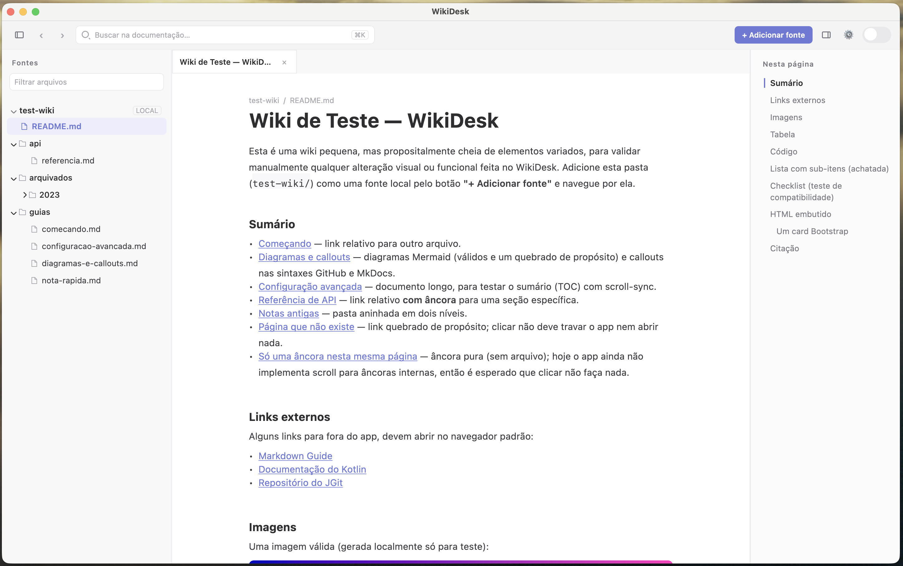
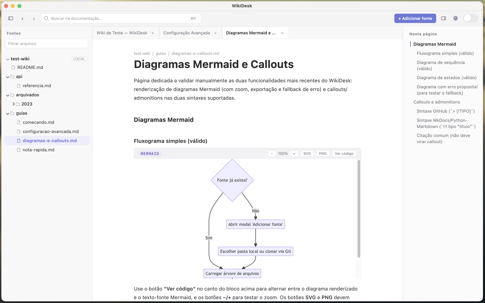
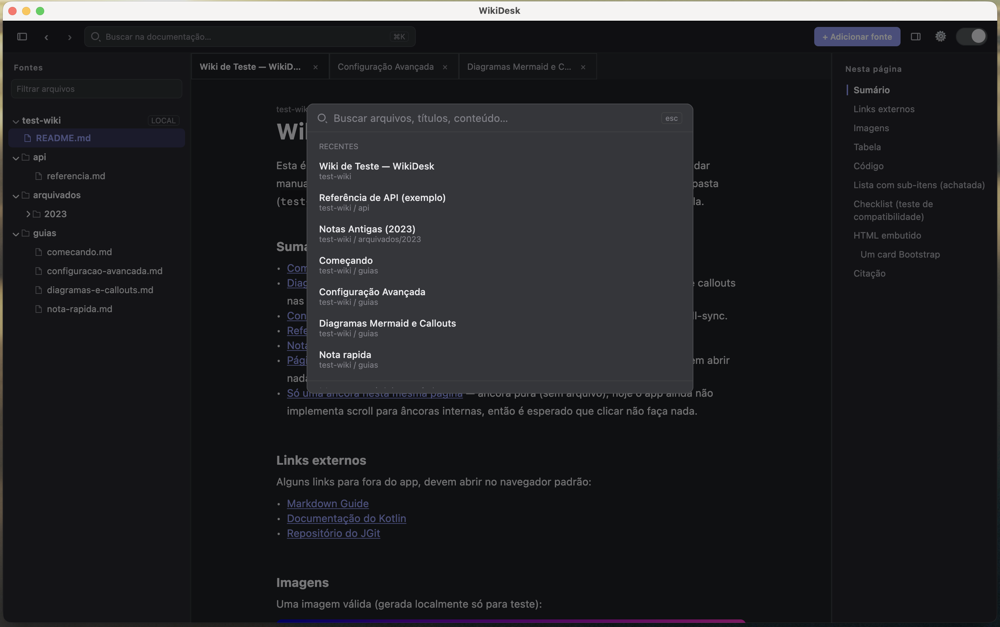
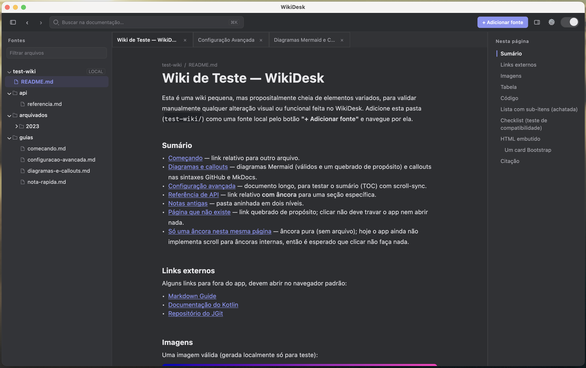
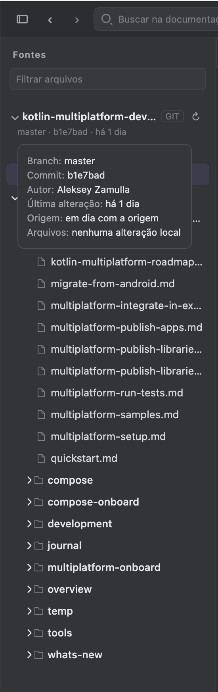

macOS
DMGInstalador para computadores Mac. Na primeira abertura, talvez seja necessário liberar o app nos ajustes de segurança.
Baixar .dmgMarkdown local, Git e Mermaid no desktop
Um leitor de documentação para abrir wikis Markdown, repositórios clonados e vaults locais com navegação, busca global, sumário sincronizado e diagramas renderizados.
Escolha o instalador do seu sistema. Todos os arquivos são gerados automaticamente pela Release oficial do projeto no GitHub.
Instalador para computadores Mac. Na primeira abertura, talvez seja necessário liberar o app nos ajustes de segurança.
Baixar .dmgPacote de instalação para Windows. Caso o SmartScreen apareça, use a opção de mais informações para continuar.
Baixar .msiPacote Debian/Ubuntu para ambientes Linux compatíveis com arquivos .deb.
O sistema pode pedir confirmação na primeira execução. Isso é esperado para esta versão inicial distribuída pelo GitHub.
Na primeira vez que abrir um diagrama, o app baixa o runtime de renderização uma única vez.
O WikiDesk foi desenhado para leitura diária: estrutura de pastas à esquerda, conteúdo no centro e contexto da página sempre visível à direita.

Use com wikis locais, documentação de projetos, vaults pessoais ou repositórios clonados.

Fluxos, sequências e outros diagramas são renderizados com Mermaid, com opções de zoom e exportação.

Encontre páginas pelo título ou conteúdo em todas as fontes abertas, sem indexador externo.

A interface acompanha o sistema e mantém a mesma hierarquia visual nos dois temas.

Veja branch, último commit, diferença contra a origem e arquivos alterados quando a fonte é um repositório.
Sem servidor para manter, sem conta para criar e sem fluxo de publicação obrigatório. A documentação continua onde ela já está.
Renderiza títulos, tabelas, listas, links relativos, imagens, blocos de código e HTML embutido.
Abra pastas do disco ou clone repositórios via HTTPS com token ou SSH.
O índice da página acompanha a leitura e permite saltar entre seções rapidamente.
A paleta global usa atalhos familiares: Ctrl+K no Windows/Linux e Cmd+K no macOS.
Suporta anotações no estilo GitHub e MkDocs para destacar notas, avisos e exemplos.
Abas, histórico de navegação e painéis persistentes deixam a consulta mais parecida com um navegador de docs.
O projeto é MIT e usa Kotlin com Compose Multiplatform Desktop, JGit e KCEF para renderizar Mermaid.
git clone https://github.com/Erivelto47/wikidesk.git
cd wikidesk
./gradlew run
./gradlew packageDmg
./gradlew packageMsi
./gradlew packageDeb